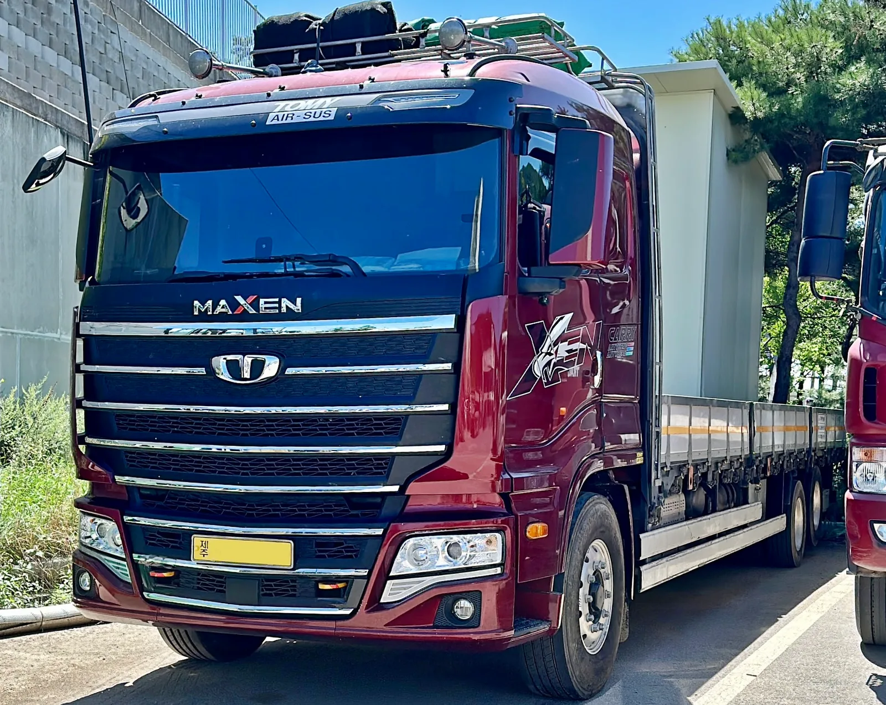
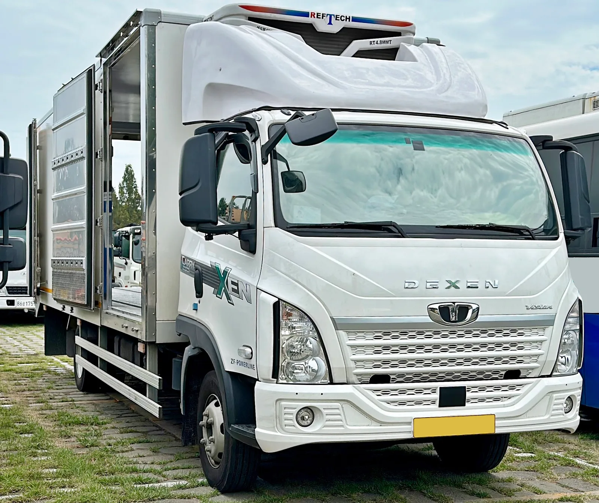
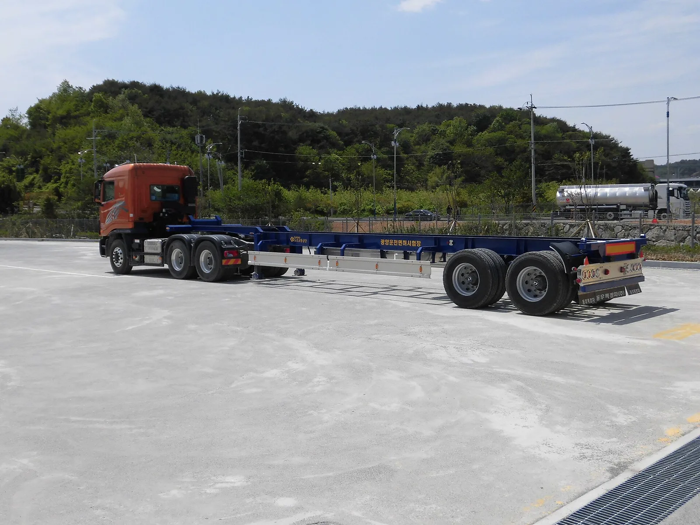

▲ 타타대우모빌리티의 대형트럭 맥쎈(MAXEN). 레벨4 자율주행 기술은 이 차급의 플랫폼을 기반으로 개발되고 있다
1. 군산 본사에서 맺은 자율주행 업무협약
타타대우모빌리티와 자율주행 인공지능 소프트웨어 기업 라이드플럭스가 2026년 9월 3일 군산 본사에서 업무협약을 체결했다. 이번 협약은 상용트럭 전용 레벨2+ 주행보조 시스템 개발을 시작으로, 궁극적으로는 운전자 없이도 주행이 가능한 레벨4 완전자율주행 트럭 양산까지 단계적으로 나아가는 것을 목표로 한다.
협약에 따라 타타대우모빌리티는 대형트럭 '맥쎈(MAXEN)'과 중형트럭 '구쎈(KUXEN)' 플랫폼을 비롯한 차량 하드웨어와 제어 인터페이스를 제공하고, 라이드플럭스는 고속도로 주행을 중심으로 한 자율주행 소프트웨어 개발을 담당한다.
▲ 타타대우모빌리티의 대형트럭 맥쎈. 자율주행 로드맵의 1단계인 레벨2+ 주행보조 시스템은 이 플랫폼을 기반으로 개발된다 ⓒ Wikimedia Commons
2. 이미 시작된 국내 최초 자율주행트럭 유상 화물운송
이번 협약이 눈길을 끄는 이유는 이미 실제 도로에서 검증이 진행되고 있기 때문이다. 타타대우모빌리티와 라이드플럭스는 2026년 7월부터 물류기업 한진과 협력해 군산-전주-대전 구간 고속도로·일반도로에서 자율주행트럭을 이용한 국내 최초의 유상 화물운송을 수행하고 있다. 단순 시범 주행이 아니라 실제 화물을 싣고 요금을 받는 상업 운송이라는 점에서, 국내 자율주행 상용차 상용화의 이정표로 평가된다.
📍 참고로 알아두면 좋은 것
레벨2+는 차선유지, 앞차 추종, 차선변경 보조 등 고속도로 위주의 부분 자율주행 기능을 뜻하며 운전자의 상시 개입이 필요하다. 반면 레벨4는 특정 조건(ODD, 운행설계영역) 안에서 운전자 개입 없이 차량이 스스로 주행을 완결하는 완전자율주행 단계로, 이번 로드맵의 최종 목표다.
3. 시범운행부터 유상운송까지, 축적된 실적
이번 화물운송은 하루아침에 이뤄진 것이 아니다. 타타대우모빌리티와 라이드플럭스는 2025년부터 서울-충청권을 잇는 고속도로와 일반도로에서 자율주행트럭 시범운행을 진행하며 데이터를 축적해왔다. 이 기간 동안 확보한 주행 데이터와 안전성 검증 결과를 바탕으로, 2026년 7월부터는 실제 화물을 실은 유상 운송 단계로 넘어갔다.
| 단계 | 시기 | 내용 |
|---|---|---|
| 1단계 | 2025년 | 서울-충청권 고속도로·일반도로 시범운행 |
| 2단계 | 2026년 7월~ | 한진과 협력, 군산-전주-대전 노선 유상 화물운송(국내 최초) |
| 3단계 | 2026년 9월~ | 레벨2+ 주행보조 시스템 공동 개발 착수 |
| 4단계 | 추후 로드맵 | 단계적 기술 고도화 후 레벨4 완전자율주행 트럭 양산 목표 |

▲ 타타대우모빌리티의 중형 트럭 라인업 중 하나인 덱센(DEXEN). 자율주행 기술은 대형·중형 트럭 플랫폼에 순차 적용될 예정이다 ⓒ Wikimedia Commons
4. 글로벌 상용차 시장 진출의 발판
타타대우모빌리티는 이번 자율주행 기술 개발을 국내 시장에 국한하지 않고, 모기업인 타타모터스와 연계해 글로벌 상용차 시장 진출의 기반으로 삼겠다는 전략이다. 타타모터스는 인도를 비롯해 아시아, 아프리카 등 신흥 시장에서 상용차 판매 비중이 높은 만큼, 국내에서 검증된 자율주행 기술을 해외 플랫폼에 이식할 경우 상용차 부문의 경쟁력을 한 단계 끌어올릴 수 있을 것으로 기대된다.
관련 소식은 타타대우모빌리티 공식 홈페이지에서 확인할 수 있다. 바로가기

▲ 컨테이너 섀시를 견인 중인 타타대우 트럭 트랙터. 자율주행 검증에는 이 같은 대형 화물 견인 시나리오도 포함되는 것으로 알려졌다 ⓒ Wikimedia Commons
5. 국내 물류 산업에 미칠 영향
자율주행 화물트럭 상용화는 만성적인 화물차 운전자 부족과 장거리 운행에 따른 피로 운전 문제를 해소할 대안으로 주목받고 있다. 특히 고속도로 구간을 중심으로 한 레벨2+ 주행보조 시스템이 먼저 상용화되면, 운전자의 피로도를 줄이면서도 안전성을 높이는 효과가 기대된다. 이후 레벨4 완전자율주행이 실현되면 운전자 없이도 심야·새벽 시간대 화물운송이 가능해져 물류 효율이 크게 개선될 전망이다.
✅ 타타대우 자율주행 트럭, 이것만은 확인하세요
· 2026년 9월 3일, 타타대우모빌리티-라이드플럭스 업무협약 체결
· 2026년 7월부터 한진과 협력해 군산-전주-대전 노선 유상 화물운송 중(국내 최초)
· 맥쎈·구쎈 플랫폼 기반 레벨2+ 주행보조 시스템 우선 개발
· 최종 목표는 완전 무인 레벨4 트럭 양산
· 타타모터스와 연계한 글로벌 상용차 시장 진출도 병행 추진
6. 정리
타타대우모빌리티와 라이드플럭스의 이번 협약은 단순한 기술 개발 선언이 아니라, 이미 실제 도로에서 화물을 실어 나른 실적을 바탕으로 한 구체적인 양산 로드맵이라는 점에서 의미가 크다. 레벨2+ 주행보조 시스템을 거쳐 완전 무인 레벨4 트럭 양산까지 나아가겠다는 목표 아래, 국내 물류 산업과 글로벌 상용차 시장 모두에서 변화를 이끌어낼 수 있을지 주목된다.